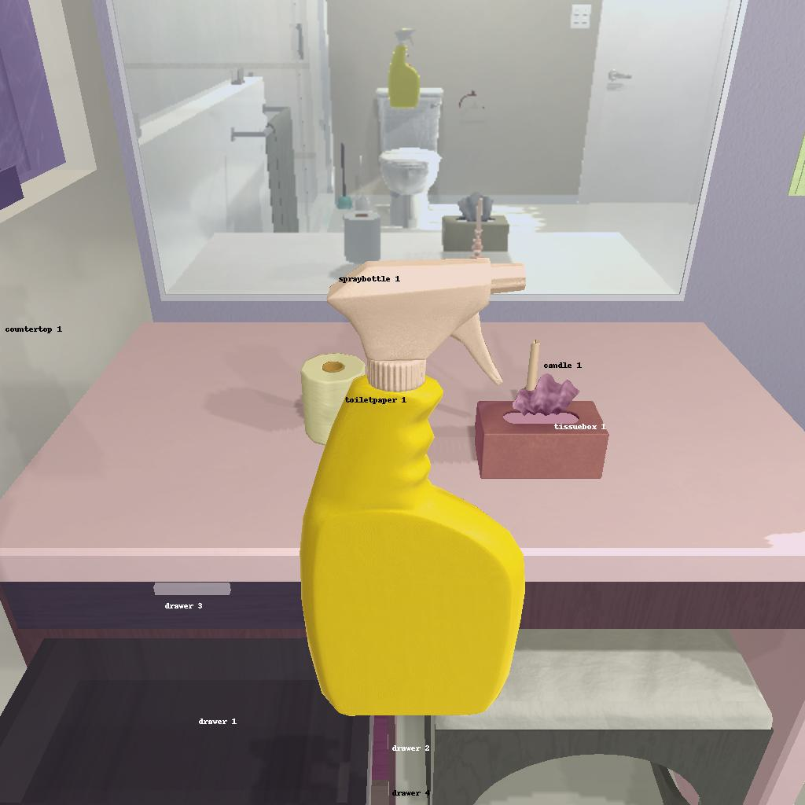

---------------------------------------------------------task: 28---------------------------------------------------------
--------------------------------------------------------------------------------------------------------------------------------------------------------------------
--------------------------------------------------------------------------------------------------------------------------------------------------------------------
Step:--------------------------------------------------------------------------16-------------------------------------------------------------------------------
----------------------------------------
VLM Prompt:
Image1:
**Instruction**
1. Analyze the provided image to identify all visible household objects, focusing on those relevant to the task description "find two spraybottle and put them in toilet."
2. Use the analysis of the image and the task hint "The agent must find an object of the desired type, pick it up, find the correct location to place it, put it down there, then look for another object of the desired type, pick it up, return to previous location, and put it down there with the other object." to answer the question: what is the most reasonable action in the choices for the task description "find two spraybottle and put them in toilet"?
4. Decide and write the answer using the template: The answer is: (i): , where i is the real number. If there is no desired object in the image, search every place based on **Initial Observation** to find the object. And if no one is exactly correct, choose a similar answer.
**Initial Observation**
You are in the middle of a room. Looking quickly around you, you can see bathtub (1), bathtubbasin (1), cart (1), sink (1), garbagecan (1), sinkbasin (1), countertop (1), drawer (1-4), toilet (1), toiletpaperhanger (1)
**Answer Choices**
(1): go to bathtub 1
(2): go to bathtubbasin 1
(3): go to cart 1
(4): go to sink 1
(5): go to garbagecan 1
(6): go to sinkbasin 1
(7): go to drawer 1
(8): go to drawer 2
(9): go to drawer 3
(10): go to drawer 4
(11): go to toilet 1
(12): go to toiletpaperhanger 1
(13): put spraybottle 1 in/on countertop 1
(14): examine spraybottle 1
(15): examine countertop 1
**Answer**
Let's think step by step by following the instructions.
----------------------------------------
----------------------------------------
Original Response:
First, we identify all visible household objects relevant to the task. In the image, we see one spraybottle labeled as "spraybottle 1" on the countertop. According to the task description, we need to find two spray bottles and put them in the toilet.
Based on the initial observation, there is only one spray bottle visible in the image. Therefore, we will have to search other locations to find the second spray bottle.
Let's consider the answer choices and use the task hint to decide the most reasonable action. Since we already see one spray bottle on the countertop, we do not need to go to or examine the countertop (eliminating choices 13, 14, and 15). We also do not need to go to the locations that typically would not store a spray bottle, such as the bathtub, bathtub basin, cart, sink, garbage can, sink basin, or toilet paper hanger (eliminating choices 1, 2, 3, 4, 5, 6, 11, and 12).
The remaining choices are to go to the drawers (7, 8, 9, 10). Since we are looking for a second spray bottle and drawers are common storage areas for such items, it makes sense to search there next.
The answer is: (7): go to drawer 1. If the desired object is not found there, continue searching the other drawers (8, 9, 10) until the second spray bottle is found. Then, proceed to put both spray bottles in the toilet, as per the task description.
----------------------------------------
----------------------------------------
>>> Refine Original VLM Response and Get Pure Action: go to drawer 1
----------------------------------------
-----------------------------------------------------------------
Running time: 17.768354892730713 seconds
Total Money: 10.312470000000008
-----------------------------------------------------------------
-----------------------------------------------------------------
Text Observation:You arrive at loc 7. The drawer 1 is open. On the drawer 1, you see a tissuebox 1, a toiletpaper 1, a handtowel 1, and a candle 1.
-----------------------------------------------------------------
UNSUCCEED